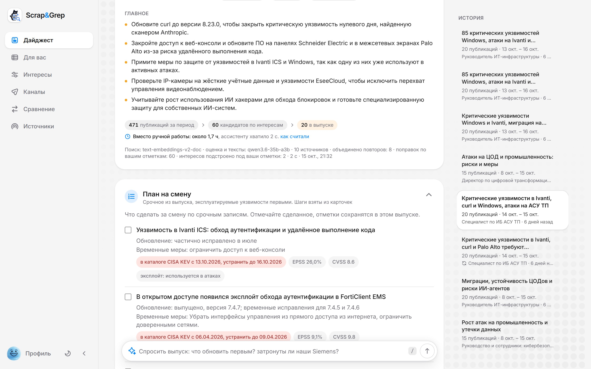
ИИ-ассистент, который читает новости ИТ и ИБ за всю компанию и собирает каждому сотруднику его выпуск.
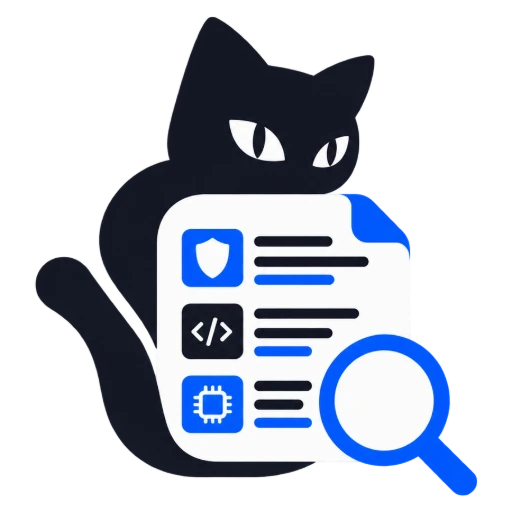
Scrap&GrepЭкран: выпуск специалисту по ИБ АСУ ТП на стенде с моделями Yandex AI Studio01 / 18Ivanti ICS попала в каталог CISA KEV 13 октября со сроком устранения 16 октября. Недельный обзор, собранный вручную, вышел бы, когда срок уже прошёл.
104 источника каждые 15 минут: сайты, ленты, Telegram, бюллетени CISA ICS и БДУ ФСТЭК. Сайты за Cloudflare читает браузер.
По интересам профиля: модель оценивает 60 кандидатов, лучшие идут в выпуск по правилу приоритета датасета.
Номера, оценки и версии сверяет с текстом статьи: выдуманное в выпуск не попадает.
Темы, выжимки со ссылкой на первоисточник, приоритет и что делать.
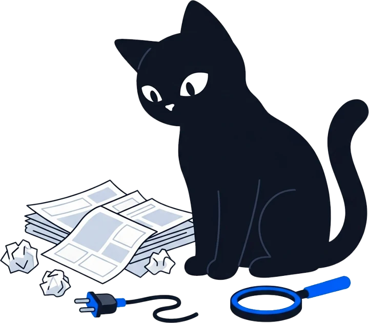
Время сборки выпуска специалисту по ИБ АСУ ТП: 60 кандидатов, 20 записей.
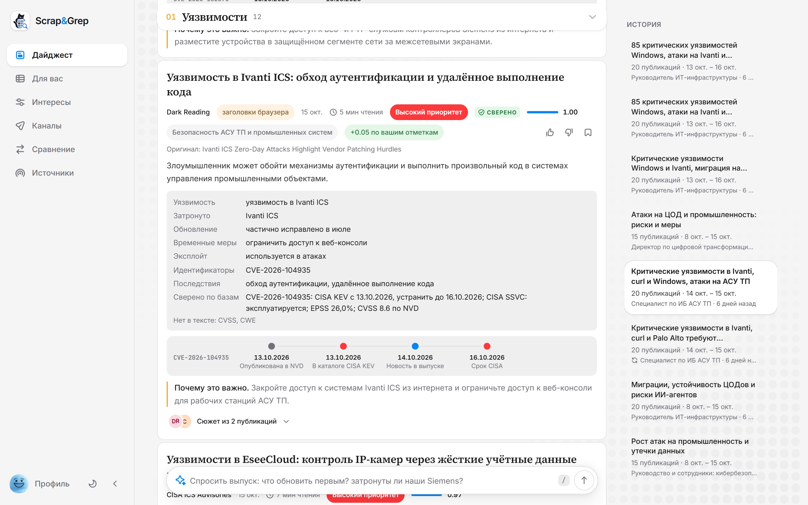
Каталоги CISA KEV, БДУ ФСТЭК и NVD обновляются сами, срок устранения берётся из KEV
Уязвимости, которые уже используют в атаках, стоят в выпуске первыми
План на смену: обновление, временные меры, индикаторы и техники атаки
В SOC одной кнопкой: STIX 2.1, событие MISP или CSV
Аналитик с семью годами опыта в Threat Intelligence и защите АСУ ТП собрал те же два выпуска: неделя 25 сентября - 2 октября, те же профили читателей, те же 69 источников.
Окупается уже на 4 читателях, если ручной выпуск дольше 22 минут
1 Хабр Карьера, «Топ-5 высокооплачиваемых направлений в IT в 2026 году», 10.08.2026
2 ФНС: единый тариф страховых взносов 30%, предельная база 2026 года 2 979 000 ₽
3 КонсультантПлюс: производственный календарь 2026, 1 972 рабочих часа
4 ollama.com/pricing: gpt-oss:120b $0,15 / $0,60 за 1 млн токенов, Pro $20, проверено 14.10.2026
5 ЦБ РФ: 83,9497 ₽ за доллар на 15.10.2026
6 Selectel, тариф VDS «monster»: 4,76 ₽ в час, 730 часов в месяц, проверено 14.10.2026
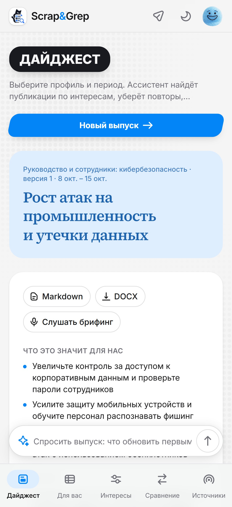
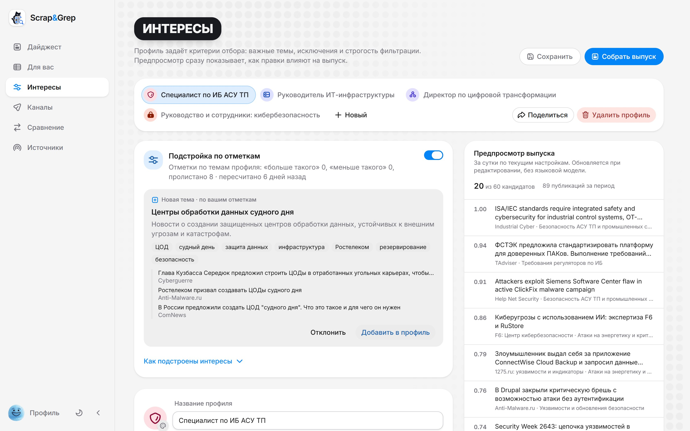
Предпросмотр сразу показывает, как правка меняет выпуск.
PDF, DOCX или скан: готовый профиль за 12-39 с.
Точность ленты, nDCG@20, после 20 оценок:
Лишние строки карточек и блоки выпуска скрываются.
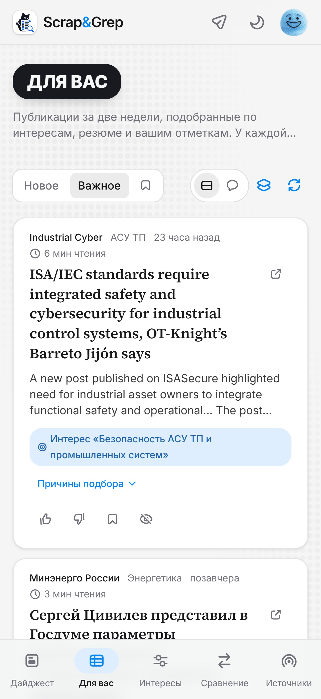
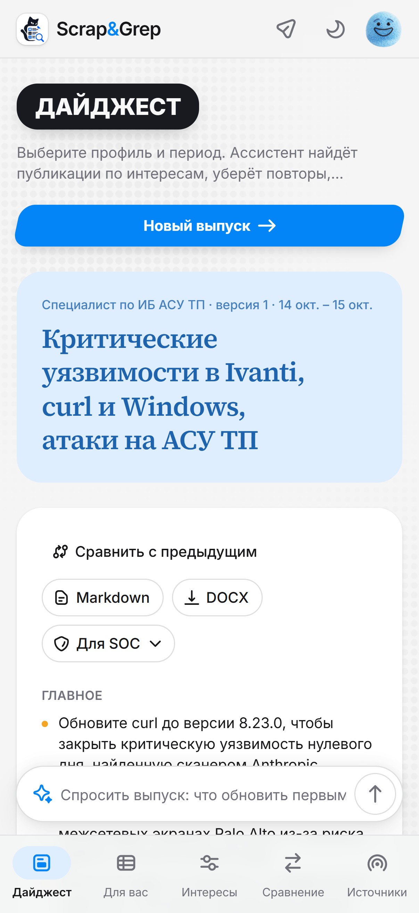
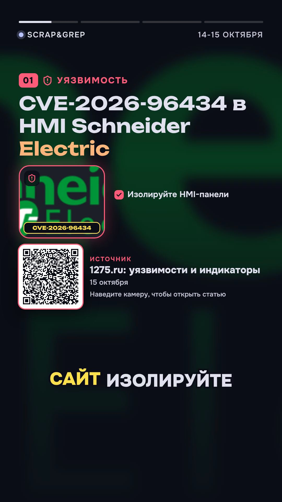
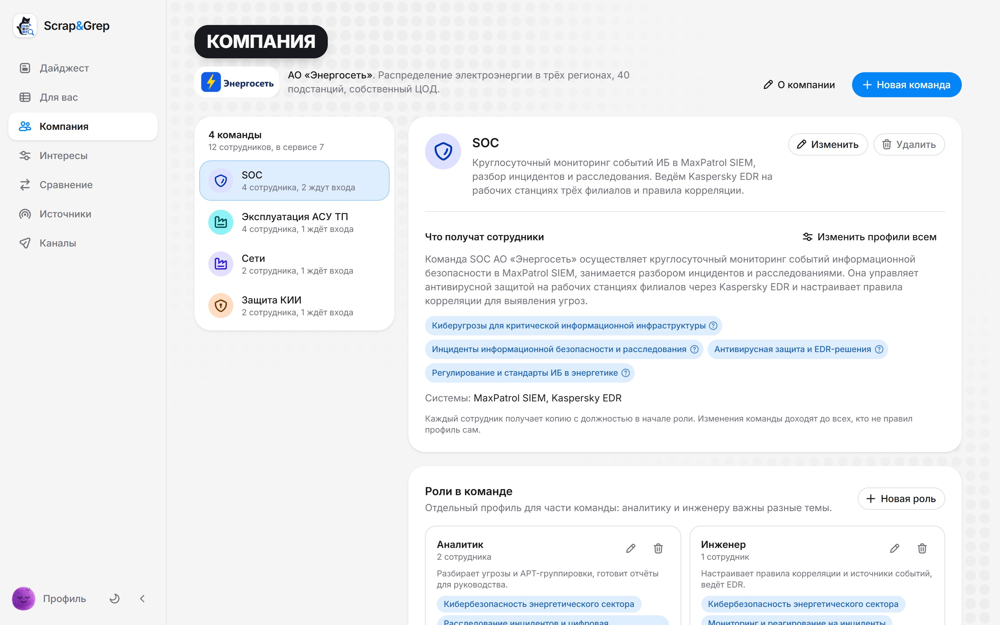
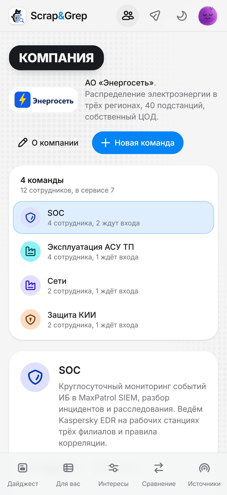
модель составляет профиль команды по её описанию
Роли внутри команды: аналитику и инженеру SOC разные темы
Личные ссылки: сотрудник задаёт пароль и сразу видит готовый выпуск
Одна правка сразу всей команде, роли или выбранным людям
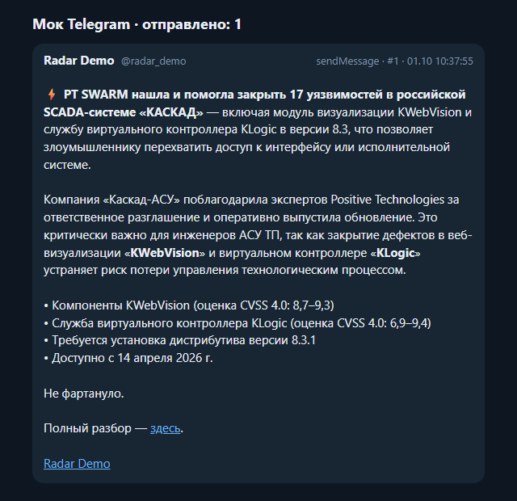
По расписанию. У каждого канала своя аудитория, голос и подача ссылок.
Письмо с выпуском и DOCX через почтовый сервер компании.
Видит новости сотрудника через MCP по его личному ключу.
Markdown и DOCX выпуска одним нажатием.
Сервис работал внутри стартапа наших знакомых. ИБ-специалисты читали выпуски и присылали замечания, мы их учли. Теперь сервис гарантирует:
Одна уязвимость - одна запись: пересказы склеиваются по номерам CVE и БДУ
«Установите патч» только когда патч вышел, иначе временные меры
Шапка выпуска пишет, сколько записей исправлено и сколько полей убрано
В выпусках руководству ни одного номера CVE, оценки или версии
Эти правила закреплены тестами и проверяются на каждом выпуске-примере при каждом коммите
запросов в секунду, ошибок 0 из 18 565
потерянных запросов из 15 670, когда одну из четырёх реплик остановили под нагрузкой
до готового выпуска, когда модель отказала посреди сборки
воркер упал посреди сборки: второй продолжил с того же шага
Реплики добавляются одной командой без остановки:
docker compose up -d --scale api=4
сайты, RSS, Telegram, CISA ICS, БДУ ФСТЭК, NVD, EPSS, Exploit-DB
лестница чтения: запрос → curl_cffi → браузер → FlareSolverr; прокси с журналом
PostgreSQL с pgvector, Valkey для очередей и кеша, ClickHouse для событий чтения
поиск по эмбеддингам, оценка моделью, карточки, проверка по тексту и базам
FastAPI, веб на React 19, Telegram, почта, MCP, ролики в Remotion
Qwen3.6 35B, text-embeddings-v2, голос SpeechKit
Ollama или vLLM, эмбеддинги лежат в образе
поиск, оценка и выжимки автономным алгоритмом
Закрытый контур: сервисы без выхода в интернет, источники только через прокси с журналом
152-ФЗ: контакты из резюме вырезаются до анализа, сам текст не хранится
Команды внутри статей вырезаются, ответ модели принимается только по JSON-схеме
Чужие профили и выпуски недоступны, вход с лимитом попыток, ключи MCP личные
Контейнеры без root, рендер видео без сети и с диском только на чтение
Для объектов КИИ: модель на своём сервере, интернет не нужен.
Без своей видеокарты: тексты, эмбеддинги и голос в Yandex AI Studio.
На любом сервере с Docker, тысячи выпусков в час.
10-20 сотрудников из разных групп, у каждого свой профиль. Успех: полнота важных новостей не ниже 90% и проверка недельного выпуска не дольше 30 минут.
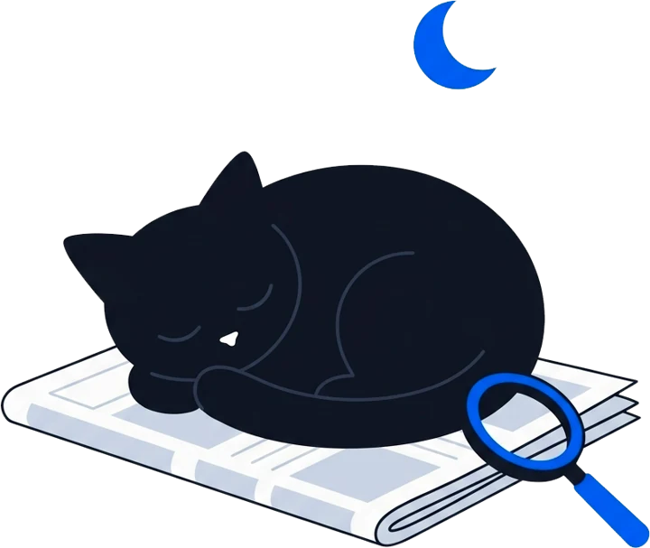
Ссылка в начале README: от входа до пространства компании.
28 выпусков, ответ аналитика и 21 пример датасета организаторов.
docker compose up -d, путь жюри проверяет scripts/smoke.py.
Пока команда спит, выпуск на утро уже собирается
Выпуск по расписанию, ролик и пост в канал к началу смены. Спасибо!